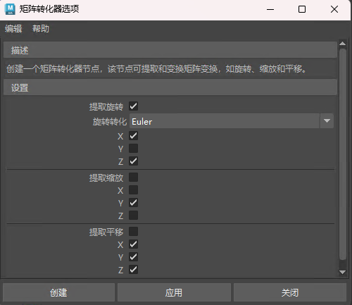

打开“矩阵转化器选项”(Matrix Converter Options)

“矩阵转化器选项”(Matrix Converter Options)用于创建矩阵转化器，还可以选择要提取的变换以及表示旋转的格式。
- 提取旋转(Extract Rotation)
-
“提取旋转”(Extract Rotation)旋转设置具有用于选择旋转转化的附加选项：
-
- 旋转转化(Rotation Conversion)
- 需要转化旋转以进行矩阵转化。从以下选项中选择：
- Euler（默认值）
- 四元数(Quaternion)
- 双轴(Double Axis)
- 三轴(Triple Axis)
- X、Y、Z
- 选择一个或多个要转化的旋转轴。
- 提取缩放(Extract Scale)
-
- X、Y、Z
-
选择一个或多个要转化的缩放轴。
- 提取平移(Extract Translation)
-
- X、Y、Z
-
选择一个或多个要转化的平移轴。